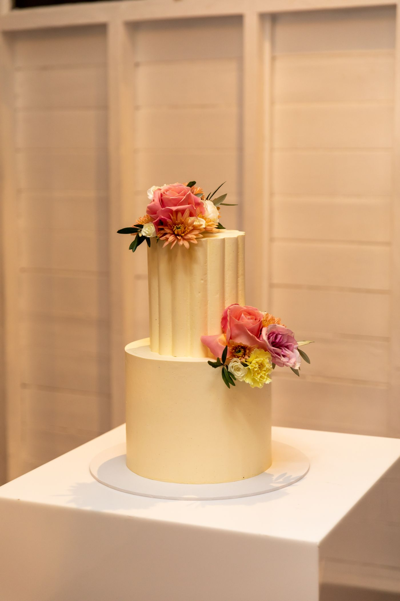

Wedding & quinceañera cakes
For the moments
you’ll remember.
Custom cakes for your wedding, your celebration, your people. Created by Favi in the heart of downtown Hillsboro.

The cake is part of the story.
A beautiful centerpiece.
A reason to gather a little closer.
Made for your occasion
One day. All the details.
Wedding cakes
Start with your date and your ideas. Contact Favi to discuss your celebration and arrange a cake consultation.
Quinceañera cakes
A centerpiece for a milestone celebration. Share your theme, guest count and inspiration directly with the bakery.
Celebration cakes & sweets
Birthdays, children’s cakes and cupcakes. Browse recent designs, then ask about your date and the current selection.
Begin with a conversation
Your celebration
starts here.
Have your event date, approximate guest count and a few design ideas ready. Favi can guide you through the details and current availability.
Call FaviThe bakery on Main Street
Come say hello.
301 E Main Street
Hillsboro, Oregon 97123
- Wednesday–Thursday
- 4–7:30 PM
- Friday
- 4–8 PM
- Saturday
- Noon–5 PM
- Sunday–Tuesday
- Closed
Hours listed by Restaurantji. Call before visiting; special closures may apply.
From the review pages
The recent Restaurantji reviews we checked discuss cake decoration, flavor and communication during custom orders. Read the original customer accounts before planning your own visit.